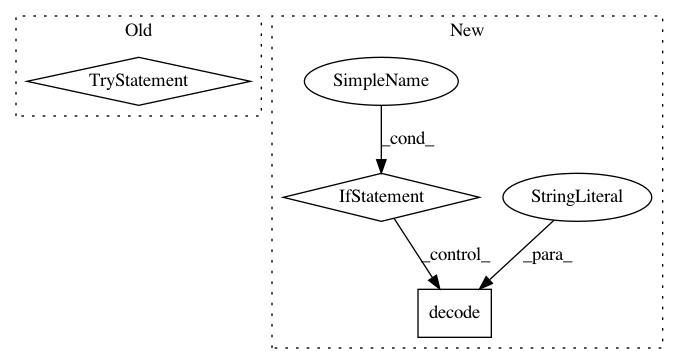

a439f0ce0178b675273790e3ff6beb25cc01b4af,pynets/utils.py,,nilearn_atlas_helper,#Any#,14
Before Change
label_names = getattr(datasets, "fetch_%s" % atlas_select)().labels
except:
label_names = None
try:
networks_list = getattr(datasets, "fetch_%s" % atlas_select)().networks
except:
networks_list = None
except RuntimeError:
print("Extraction from nilearn datasets failed!")
return label_names, networks_list, parlistfile
After Change
parlistfile = [i.decode("utf-8") for i in getattr(datasets, "fetch_%s" % atlas_select)().maps]
else:
parlistfile = None
if "labels" in list(getattr(datasets, "fetch_%s" % atlas_select)().keys()):
label_names = [i.decode("utf-8") for i in getattr(datasets, "fetch_%s" % atlas_select)().labels]
else:
label_names = None
if "networks" in list(getattr(datasets, "fetch_%s" % atlas_select)().keys()):
networks_list = [i.decode("utf-8") for i in getattr(datasets, "fetch_%s" % atlas_select)().networks]
else:
networks_list = None
In pattern: SUPERPATTERN
Frequency: 3
Non-data size: 3
Instances
Project Name: dPys/PyNets
Commit Name: a439f0ce0178b675273790e3ff6beb25cc01b4af
Time: 2018-06-19
Author: dpisner@utexas.edu
File Name: pynets/utils.py
Class Name:
Method Name: nilearn_atlas_helper
Project Name: fxsjy/jieba
Commit Name: 99d0fb1a8a00c80c97271b2cc58d52c4fcff0032
Time: 2015-11-09
Author: abcdoyle888@gmail.com
File Name: jieba/__init__.py
Class Name: Tokenizer
Method Name: load_userdict
Project Name: stratosphereips/StratosphereLinuxIPS
Commit Name: b5a525cb49f57bc4ffda979699db4c6b4bda6c1d
Time: 2019-01-26
Author: eldraco@gmail.com
File Name: slips/core/database.py
Class Name: Database
Method Name: getTWforScore